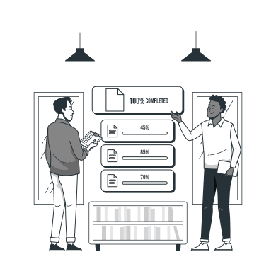
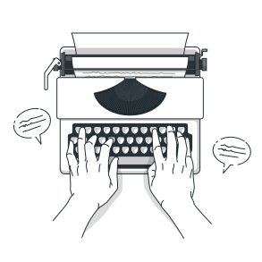
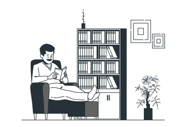

<section class="section-2 container">
    <div class="section-2content">
        <div class="section-2contenttitle">
            <h1>Skills</h1>
        </div>
        <div class="section-2contentcard-1">
            
            <h2>Speaking</h2>
            <p>
                Improve your English skills and confidence. Live classes and interactive
                lessons online. 20% extra free for a limited time only Learn English
                online and improve your skills through our high-quality courses and
                resources – all designed for adult language learners.
            </p>
            <div class="section-2contentbutton">
                <button type="">Learn more</button>
            </div>
        </div>
        <div class="section-2contentcard-2">
            
            <h2>Writing</h2>
            <p>
                One of the most important and extensive areas of natural science, the
                science that studies substances, also their composition
            </p>
            <div class="section-2contentbutton">
                <button type="button">Learn more</button>
            </div>
        </div>
        <div class="section-2contentcard-3">
            
            <h2>Listening</h2>
            <p>
                Here you can find activities to practise your listening skills.
                Listening will help you to improve your understanding
            </p>

        </div>
        <div class="section-2content__card-4">
            
            <h2>Reading</h2>
            <p>
                Perception and response actions of the user resulting from the use
                and/or upcoming use of the product, system or service
            </p>
        </div>
    </div>
</section>